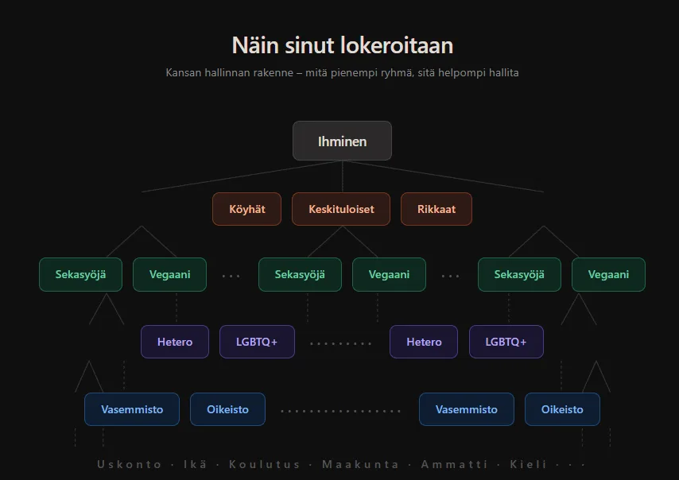

Meidän pitäisi alkaa miettiä, miksi meidät tavalliset kansalaiset halutaan jakaa lokeroihin. Kuka hyötyy siitä, että vasemmisto taistelee oikeistoa vastaan? Kuka hyötyy, kun lihansyöjät väittelevät vegaanien kanssa?
Meidät jaetaan pieniin ryhmiin, ja ryhmät jaetaan vielä pienempiin. Jaettua kansaa on helpompi hallita. Kun ihmiset saadaan riitelemään keskenään netissä ja kaduilla asioista, joihin he eivät koskaan pysty vaikuttamaan, kukaan ei katso ylöspäin.
Mieti hetki omaa arkeasi. Kuinka monta kertaa otit viime viikolla kantaa johonkin asiaan netissä? Kuinka monesti ärsyynnyit vieraan ihmisen mielipiteestä? Kuinka monelle tuntemattomalle selitit, miksi hänen ajattelunsa on väärää?
Ja ennen kaikkea: muuttiko se mitään? Ei muuttanut. Mutta se vei aikaasi, energiaasi ja mielenrauhaasi. Juuri niin sen kuuluukin mennä – jonkun muun kannalta.
Kuka tästä oikeasti hyötyy
Laita lihaa syövä hetero ja homoseksuaali vegaani samaan huoneeseen, ja väittely alkaa melko varmasti. Poista kuviosta vaikutteet eli media, ja ihmiset alkaisivat huomata, miten yhteiskunta kontrolloi heitä ja heidän ajatuksiaan.
Pahin vahvistin on sosiaalinen media, joka tuo koko maailman samalle viivalle – ja silloin voidaan kontrolloida suurempaa kuvaa. Ennen somea väittelit lähinnä naapurisi tai työkaverisi kanssa pienistä asioista, ja siihen se jäi. Nyt väittelet samanaikaisesti miljoonien ihmisten kanssa kaikesta mahdollisesta ympäri vuorokauden. Jokainen väittely jättää jäljen mielenterveyteesi ja kuluttaa sinua tavalla, jota et edes huomaa.
Katso, kuka sinun tunteistasi elää:
- Uutismediat tarvitsevat vihaasi, koska viha klikkaa ja klikit tuovat rahaa.
- Sosiaalinen media tarvitsee raivoasi, koska raivo pitää sinut sovelluksessa pidempään – ja pidempi aika tarkoittaa enemmän mainostuloja.
- Poliitikot tarvitsevat pelkoasi, koska pelkäävä ihminen äänestää, ja äänet pitävät heidät vallassa.
Kaikki nämä hyötyvät siitä, että sinä olet lokerossasi ja taistelet innokkaasti toista lokeroa vastaan. Sinä et hyödy tästä yhtään mitään.
Tämä ei vaadi salaliittoa eikä takahuoneen suunnitelmaa. Jokainen taho optimoi vain omaa etuaan – ja lopputulos on silti sama kuin jos kaikki olisi suunniteltu.
Tästä on myös näyttöä. Facebookin sisäiset asiakirjat, jotka entinen työntekijä Frances Haugen toi julkisuuteen vuonna 2021, osoittivat, että yhtiö tiesi algoritminsa palkitsevan vihaa ja vastakkainasettelua. Viha ja pelko sitouttavat, ja sitoutuminen tuottaa rahaa. Toisin sanoen sinun raivosi on kirjaimellisesti heidän liiketoimintamallinsa.
Miten lokerointi toimii sinuun
Lokerointi ei tapahdu kerralla eikä väkisin. Se tapahtuu hitaasti, ja sinut suostutellaan siihen vapaaehtoisesti. Kulku on yleensä tämä:
- Löydät ihmisiä, joiden kanssa olet samaa mieltä jostakin asiasta. Se tuntuu hyvältä, koska ihminen on laumaeläin ja haluaa kuulua johonkin.
- Alat seurata heitä enemmän. Algoritmi huomaa tämän ja syöttää sinulle lisää samankaltaista sisältöä.
- Pikkuhiljaa näet enää ihmisiä, jotka vahvistavat sen, mitä jo uskot.
- Eri mieltä olevat alkavat tuntua vihollisilta.
Tätä kutsutaan kaikukammioksi, eikä siinä ole mitään luonnollista. Se on rakennettu sinuun tarkoituksella, koska vahvasti lokeroitunut ihminen on helpompi hallita, helpompi pelotella, helpompi saada äänestämään tietyllä tavalla ja helpompi saada ostamaan tiettyjä tuotteita.
Sinä et ole tässä ekosysteemissä käyttäjä vaan tuote. Mitä tiukemmin olet lokerossasi, sitä arvokkaampi tuote olet jollekin muulle.
Ryhmäpolarisaatio: maltillisesta ääripäähän
Psykologit kutsuvat ilmiötä ryhmäpolarisaatioksi, ja sitä on tutkittu 1960-luvulta lähtien. Kun samanhenkiset ihmiset kokoontuvat yhteen, he eivät jää siihen mielipiteeseen, josta aloittivat. Ajan myötä he ajautuvat yhä äärimmäisempiin kantoihin.
Some tekee tästä turboahdetun version, jossa sama voi tapahtua viikoissa eikä vuosissa. Ihminen, joka kolme vuotta sitten suhtautui johonkin asiaan maltillisesti, on tänään valmis katkaisemaan välit omaan perheeseensä saman asian takia. Hän uskoo toimivansa oman vakaumuksensa vuoksi, vaikka algoritmi on muokannut häntä askel askeleelta.
Seuraavan kerran kun alat väitellä

Kun seuraavan kerran olet ryhtymässä väittelyyn netissä, kysy itseltäsi: kuka tästä hyötyy? Et sinä, eikä varsinkaan se, joka väittelee kanssasi. Kinastelette asiasta, johon kumpikaan ei pysty vaikuttamaan. Tuhlaatte aikaanne ja energiaanne.
Kysy myös toinen, epämukavampi kysymys: oletko itse valinnut nämä mielipiteet, vai onko ne rakennettu sinuun toistamalla samaa viestiä tarpeeksi monta kertaa tarpeeksi monesta suunnasta? Jos mietit rehellisesti, milloin sinusta tuli ihminen, joka taistelee juuri tämän asian puolesta, huomaat usein, ettei se ollut tietoinen päätös. Se syntyi, kun kulutit tietynlaista mediaa tarpeeksi pitkään.
Todellinen vapautesi on vapaus päättää, mihin käytät aikasi ja energiasi. Jos käytät ne johonkin, johon et voi vaikuttaa, olet luovuttanut tuon vapauden jollekin toiselle. Se taho käyttää sinua omiin tarkoituksiinsa samalla, kun sinä luulet taistelevasi tärkeän asian puolesta.
Pysähdy. Mieti, mihin lokeroon sinut on laitettu. Mieti ennen kaikkea, kuka sen lokeron rakensi ja kenen tarpeita se palvelee. Sinun tarpeitasi se ei ole palvellut koskaan. Samasta aiheesta lisää: politiikka – asia, johon et voi vaikuttaa.
Mitä voit tehdä tänään
Tähän ei tarvita vallankumousta. Muutama konkreettinen teko riittää:
- Lopeta uutisten seuraaminen päivittäin. Uutiset eivät muutu paremmiksi, vaikka seuraisit niitä tunnin välein. Mielesi sen sijaan muuttuu huonommaksi, koska jokainen negatiivinen otsikko jättää jäljen.
- Lopeta väittely netissä kokonaan. Se ei ole sananvapauden käyttämistä. Se on oman energiasi lahjoittamista ihmiselle, joka ei koskaan muuta kantaansa ja joka on täsmälleen yhtä lokeroitunut kuin sinä.
- Vietä aikasi oikeiden ihmisten kanssa. Mieti, keiden kanssa oikeasti haluat olla, ja anna aikasi heille – ei tuntemattomille netissä.
- Kysy joka viikko yksi kysymys: palveleeko tämä toiminta minua vai jotakuta muuta?
